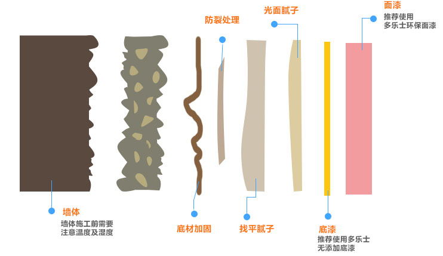
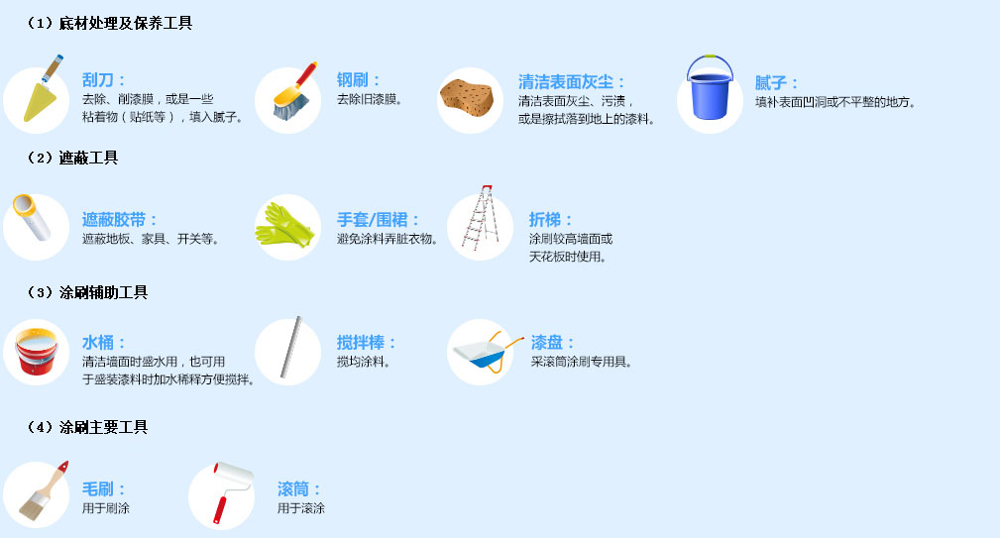
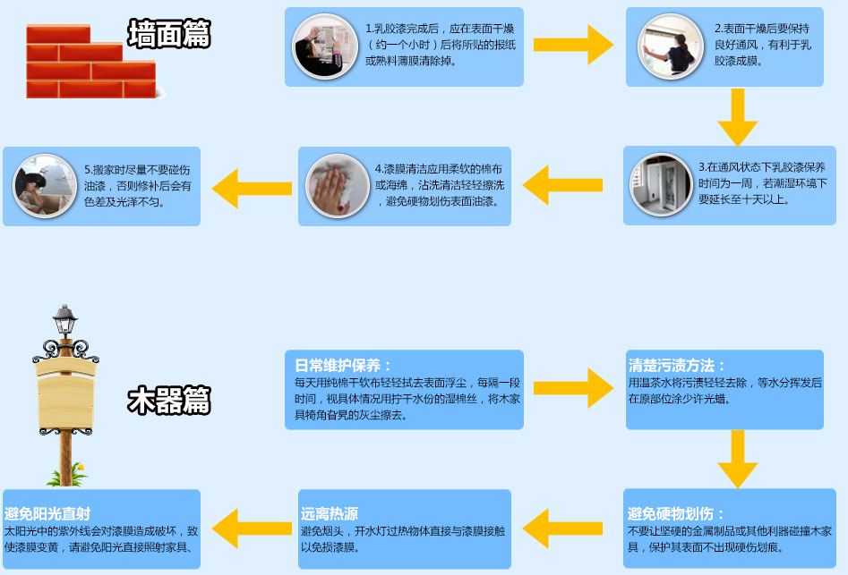
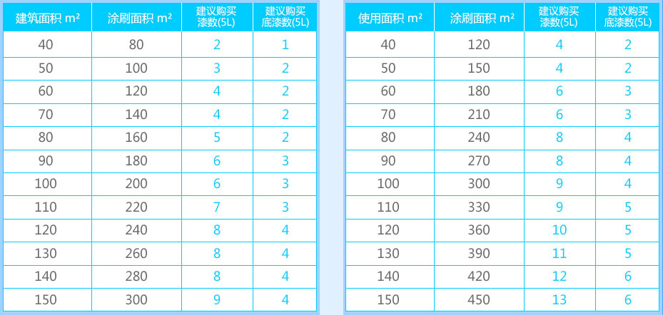
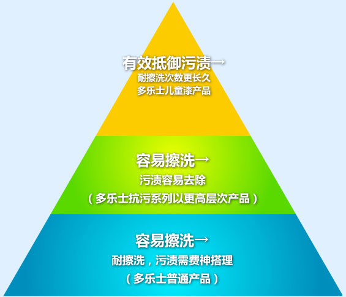
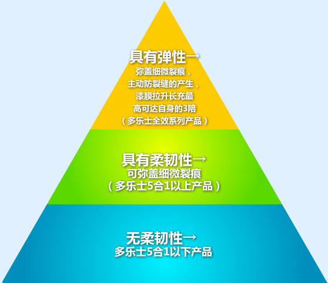
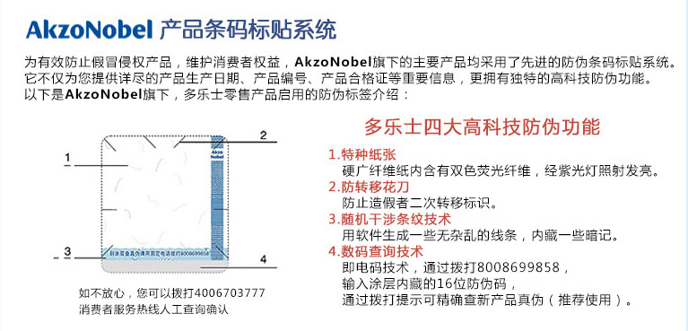
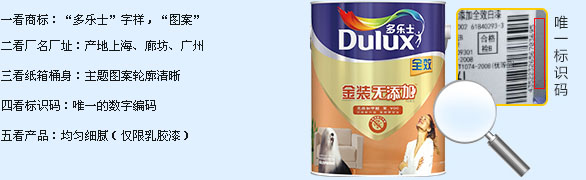

装修中的有毒物质你了解吗？
1、什么是甲醛?
甲醛是可燃无色透明气体，有强烈刺鼻味道。30%-40%甲醛溶液俗称福尔马林。甲醛具有较好的胶合性及防腐功能，所有可和许多产品结合使用。甲醛常被用于各种建筑材料，如胶 合板、毛毯、隔热材料、地板及装修和装饰材料中。
2、VOC和甲醛的说明
VOC是挥发性有机化合物的简称，当居室中VOC总量超过一定浓度时，在很短时间内人们会感到头痛、恶心、呕吐、四肢乏力，严重时会抽搐、昏迷、记忆力减退。严重伤害人们的 肝脏、肾脏、大脑和神经系统。VOC中的甲醛、甲苯、二甲苯等对人体的影响除上述症状外，还可引起咳嗽、流泪、多痰、嗅觉异常、肺功能，免疫功能异常等方面症状。
墙面装修知多少？
亲们，当您拿到新房准备装修时，墙面装修可能是您首选要考虑的问题，您是否了解看似简单的墙面涂刷 到底分多少个步骤呢？
1、墙面装修剖面示意图
看似简单的一面墙壁，其实包含很多层，只有从里到外都扎实环保，才能长久的安享完美墙面效果

2、正确的墙面涂刷步骤
正确的涂刷程序由四个阶段，共十个步骤，环环相佐。
3、涂刷工作的准备

4、涂刷时的注意事项
检查排刷刷毛及滚筒刷毛，将容易松脱的刷毛去除。再以清水浸泡，使刷毛柔顺，涂刷更顺手。将新开罐的涂料预先搅拌，再倒入适当的容器中，酌量加入15%的清水稀释并搅拌均匀。 例如：一桶5公升XXX漆，先倒出半桶，再添加15%的清水稀释。
5、涂料保养小知识

装修流程
用漆计量方法
1、内墙涂料用量面积
涂刷面积=建筑面积*2或者房间使用面积（不含厨卫）*3，每,5L产品涂布率（每桶漆可涂刷的面积）=60~70平（一遍），购买桶数需求=涂刷面积/每桶产品涂布率。
2、乳胶漆用量面积

教您挑选合适的乳胶漆
1、如何购买合适的乳胶漆
2、XXX教您如何挑选合适的乳胶漆----环保产品
房子装修完之后会有刺鼻的味道，不能马上入住，而且还担心因为装修产生的有害物质会危害到家人的健康，肿么办？

3、XXX教您如何挑选合适的乳胶漆---抗污产品
家里电源开关、走廊、鞋柜、厨房附近的封面总是会有很多难清理的污渍，孩子总是喜欢在墙上乱写乱画，顽皮的宠物也来添乱，真苦恼！

4、XXX教您如何挑选合适的乳胶漆---抗裂产品
墙面裂缝是家庭装修中无法避免的问题，不但影响美观，而且易藏污垢，危害健康，怎么办？

如何辨别乳胶漆的真伪
1、编码查询
您可以直接拨打XXX4006703777官方服务热线查询产品桶身上的竖排的16位编码。
您同时也可固定电话拨打8008699858查询桶身上的刮开码。

2、闻气味
正品无异常刺激性气味（仅适用乳胶漆）
3、肉眼识别法
